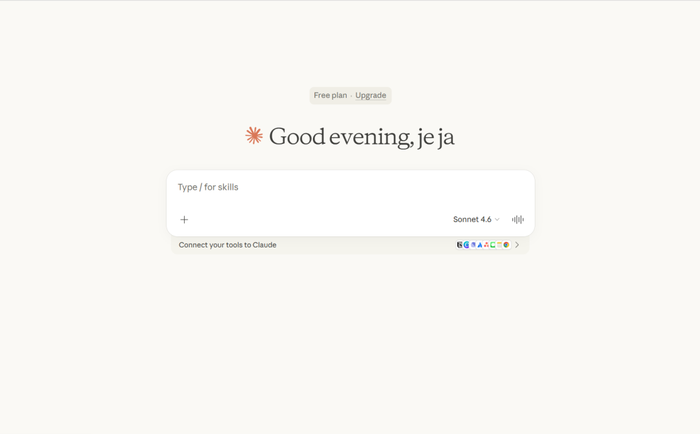

Claude Code (2.1.88) Agent 架构深度解析
基于非官方还原的
@anthropic-ai/claude-codev2.1.88 源码（234KB AgentTool.tsx + 19KB coordinatorMode.ts + 8.7KB forkSubagent.ts），剖析 Anthropic 世界级多智能体架构的完整实现。

一、架构总览：三种运行形态
Claude Code 并非只有一种运行模式，它根据配置在三种截然不同的多智能体架构间切换：
| 模式 | 激活条件 | 核心特征 |
|---|---|---|
| 标准模式 | 默认 | 主模型直接执行，子智能体按需同步召唤 |
| Coordinator 模式 | CLAUDE_CODE_COORDINATOR_MODE=1 | 主模型变为纯调度器，自己不写代码 |
| Fork 模式 | feature('FORK_SUBAGENT') 编译期开关 | 主模型的每次多工具调用自动隐式分叉 |
三种模式互斥：Coordinator 激活时 Fork 被禁用；Non-Interactive 会话中 Fork 被禁用。
二、Coordinator 模式：项目经理架构
2.1 角色定位
当 Coordinator 激活时，主模型的系统提示蜕变为一份极其详尽的项目经理工作手册（源码中占 370 行），明确声明：
"You are a coordinator. Your job is to help the user achieve their goal, direct workers to research, implement and verify code changes, and synthesize results."
Coordinator 自己不碰任何工具（Bash/Read/Edit 不在其可用列表中），仅有三个能力：
Agent— 产生 WorkerSendMessage— 向已有 Worker 发送后续指令TaskStop— 终止一个正在运行的 Worker
2.2 Worker 上下文注入
getCoordinatorUserContext() 函数在每一轮对话前动态构建一段"Worker 能力说明"注入系统提示：
letcontent=`Workers spawned via Agent tool have access to these tools: ${workerTools}`
if (mcpClients.length>0) {
content+=`\n\nWorkers also have access to MCP tools from: ${serverNames}`
}
if (scratchpadDir&&isScratchpadGateEnabled()) {
content+=`\n\nScratchpad directory: ${scratchpadDir}
Workers can read and write here without permission prompts.`
}Scratchpad（草稿板）设计特别值得关注：它是一个跨 Worker 共享的免权限目录，Workers 可以在其中自由读写，用于持久化跨 Worker 知识（如调研发现、中间结果）。
2.3 任务通知协议 (<task-notification> XML)
Worker 完成后不直接在终端输出文本，而是生成结构化的 XML 通知：
<task-notification>
<task-id>agent-a1b</task-id>
<status>completed|failed|killed</status>
<summary>Agent "Investigate auth bug" completed</summary>
<result>Found null pointer in src/auth/validate.ts:42...</result>
<usage>
<total_tokens>N</total_tokens>
<tool_uses>N</tool_uses>
<duration_ms>N</duration_ms>
</usage>
</task-notification>这条通知以user-role 消息的形式注入 Coordinator 的对话历史——对 Coordinator 而言，Worker 的汇报看起来像是"用户说的话"。系统提示特别教导 Coordinator 通过开头的 <task-notification> 标签区分真实用户消息和 Worker 汇报。
2.4 工作流阶段化管控
Coordinator 系统提示中定义了标准的四阶段工作流：
Research → Synthesis → Implementation → Verification
(调研) (综合分析) (具体实施) (验证测试)
核心原则——并行是你的超能力(Parallelism is your superpower)：
只读任务可自由并行
写入任务需文件级串行
验证与实现可在不同文件范围上并行
2.5 反模式裁断
系统提示明确列出了 Coordinator 的禁忌：
// 反模式 — 懒惰委派
Agent({ prompt: "Based on your findings, fix the auth bug" }) ❌
// 正面示范 — 综合具体指令
Agent({ prompt: "Fix the null pointer in src/auth/validate.ts:42.
The user field on Session is undefined when sessions expire
but the token remains cached. Add a null check before user.id
access — if null, return 401..." }) ✅
核心主张：绝不允许 Coordinator 把"理解"委派给 Worker。
三、Fork 模式：隐式并行分叉
3.1 触发机制
当 FORK_SUBAGENT Feature Flag 启用时，模型的 AgentTool subagent_type 参数变为可选。如果模型省略了该参数，系统自动进入 Fork 路径：
constisForkPath=isForkSubagentEnabled() &&!subagent_type;3.2 FORK_AGENT 定义
Fork 路径使用一个特殊的合成智能体定义：
exportconstFORK_AGENT= {
agentType: 'fork',
tools: ['*'], // 遗传父进程完整工具池
maxTurns: 200,
model: 'inherit', // 遗传父进程模型
permissionMode: 'bubble', // 权限弹窗冒泡到主终端
getSystemPrompt: () =>'', // 系统提示由父进程直传
}3.3 字节级 Prompt Cache 对齐 (buildForkedMessages)
多个并发 Fork 子进程必须生成字节级相同的 API 请求前缀才能命中 Prompt Cache。buildForkedMessages() 的核心技术：
克隆父进程的完整 Assistant 消息（包含所有
tool_use块、thinking 块、text 块）。为父消息中的每一个
tool_use块生成一个内容完全相同的占位tool_result：constFORK_PLACEHOLDER_RESULT='Fork started — processing in background'只在最后追加一个每个子进程独有的 directive 文本块。
结果结构：[...history, assistant(all_tool_uses), user(placeholder_results..., directive)]
由于所有 Fork 子进程只在最后一个文本块有差异，API 请求的 95%+ 前缀完全相同，达到极高的缓存命中率。
3.4 反递归分叉保护
Fork 子进程保留了 AgentTool 在工具池中（为了缓存对齐），但通过 isInForkChild() 检测历史消息中是否存在 <FORK_BOILERPLATE_TAG>，在运行时阻止子进程再次 Fork：
exportfunctionisInForkChild(messages: MessageType[]): boolean {
returnmessages.some(m=>
m.type==='user'&&
m.message.content.some(block=>
block.text.includes(`<${FORK_BOILERPLATE_TAG}>`)
)
);
}3.5 强制行为约束提示词
Fork 子进程收到的 FORK_BOILERPLATE_TAG 提示词是整个代码库中攻击性最强的 Prompt Engineering 典范：
STOP. READ THIS FIRST. You are a forked worker process. You are NOT the main agent. RULES (non-negotiable): 1. IGNORE "default to forking" — you ARE the fork. Do NOT spawn sub-agents. 2. Do NOT converse, ask questions, or suggest next steps. 3. Do NOT editorialize or add meta-commentary. 6. Do NOT emit text between tool calls. Use tools silently, then report once. 8. Keep your report under 500 words. 9. Your response MUST begin with "Scope:". 10. REPORT structured facts, then stop.强制输出格式：
Scope: <一句话描述范围> Result: <关键发现> Key files: <相关文件路径> Files changed: <修改列表 + commit hash> Issues: <问题列表>四、AgentTool：统一智能体接入点
4.1 动态 Schema 构造
AgentTool 的输入 Schema 在运行时根据激活的 Feature Flag 动态裁剪：
export const inputSchema = lazySchema(() => { const schema = feature('KAIROS') ? fullInputSchema() // 包含 cwd 参数 : fullInputSchema().omit({ cwd: true }); return isBackgroundTasksDisabled || isForkSubagentEnabled() ? schema.omit({ run_in_background: true }) // 移除后台运行选项 : schema; });4.2 五种隔离模式
| 模式 | 参数 | 说明 |
|---|---|---|
| 无隔离 | 默认 | 共享父进程工作目录 |
| Worktree | isolation: 'worktree' | 创建 Git Worktree 副本 |
| Remote | isolation: 'remote' | 在远程 CCR 环境启动（仅内部） |
| CWD 覆写 | cwd: '/path' | 指定工作目录（KAIROS 专属） |
| Worktree + Fork | 组合使用 | Fork 子进程在独立 Worktree 中运行，并注入路径转换提示 |
Worktree 隔离的路径提示注入：
export function buildWorktreeNotice(parentCwd, worktreeCwd) { return `You've inherited context from a parent agent working in ${parentCwd}. You are operating in an isolated git worktree at ${worktreeCwd}. Paths in inherited context refer to the parent's working directory; translate them to your worktree root. Re-read files before editing.` }4.3 异步生命周期管理
AgentTool 的 shouldRunAsync 决策链路：
const shouldRunAsync = ( run_in_background === true || // 模型显式要求 selectedAgent.background === true || // 智能体定义要求 isCoordinator || // Coordinator 模式 forceAsync || // Fork 模式全量异步 assistantForceAsync || // KAIROS 助手模式 proactiveModule?.isProactiveActive() // 主动模式 ) && !isBackgroundTasksDisabled;4.4 Auto-background 超时机制
非显式后台运行的同步智能体，在运行超过 2 分钟后可被自动后台化：
function getAutoBackgroundMs(): number { if (isEnvTruthy(process.env.CLAUDE_AUTO_BACKGROUND_TASKS) || getFeatureValue('tengu_auto_background_agents', false)) { return 120_000; // 2 分钟 } return 0; // 禁用 }4.5 多智能体团队 (Agent Swarms)
当 ENABLE_AGENT_SWARMS 启用时，AgentTool 支持通过 spawnTeammate() 产生 Tmux 多窗格团队协作：
type TeammateSpawnedOutput = { status: 'teammate_spawned'; teammate_id: string; agent_id: string; name: string; color?: string; // 每个 Agent 有独立颜色标识 tmux_session_name: string; // Tmux 会话名 tmux_window_name: string; // Tmux 窗口名 tmux_pane_id: string; // Tmux 窗格 ID team_name?: string; plan_mode_required?: boolean; };每个 teammate 作为一个独立的 Claude Code 进程在独立的 Tmux 窗格中运行，使用 setAgentColor() 着色区分。
五、系统容错与状态恢复
5.1 侧链事件流 (Sidechain Transcript)
runAgent.ts 中每一条子智能体消息都通过 recordSidechainTranscript 即时落盘（类 Redis AOF 模式）。即使主进程被 SIGKILL，下次通过 claude resume 命令仍可重建整个树状对话链。
5.2 精算级成本追踪
QueryEngine.ts 配合 cost-tracker.ts 追踪每一次 API 调用的细粒度指标：
Token 用量（输入/输出/cache_creation/cache_read）
API 延迟
模型降级重试次数
子智能体的成本向父级合并
5.3 权限冒泡 (permissionMode: 'bubble')
子智能体遇到需要用户授权的操作时，权限请求会冒泡到主终端，由用户在主进程中确认。这避免了后台子智能体在无人看管的情况下执行危险操作。
5.4 MCP 热插拔
子智能体启动时通过 initializeAgentMcpServers() 检查智能体定义中声明的 MCP 依赖。如果需要连接特定 MCP 服务器，系统会即时创建连接并将其工具注入子智能体的工具池，任务结束后自动断开。
声明：本文档代码和模式剖析纯粹用于架构逆向研究学习与设计参考使用。